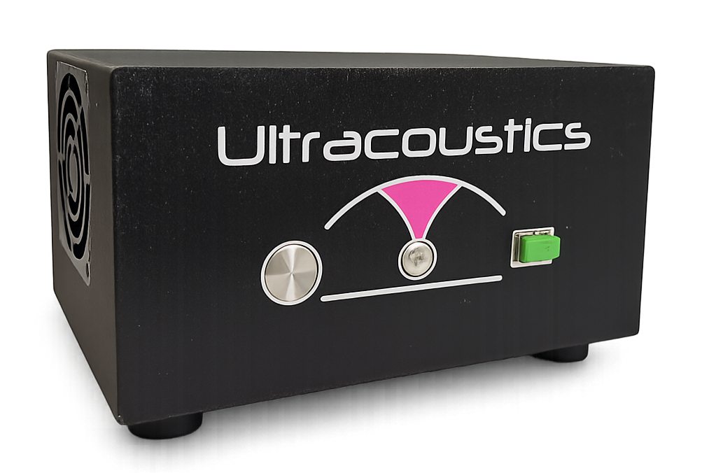
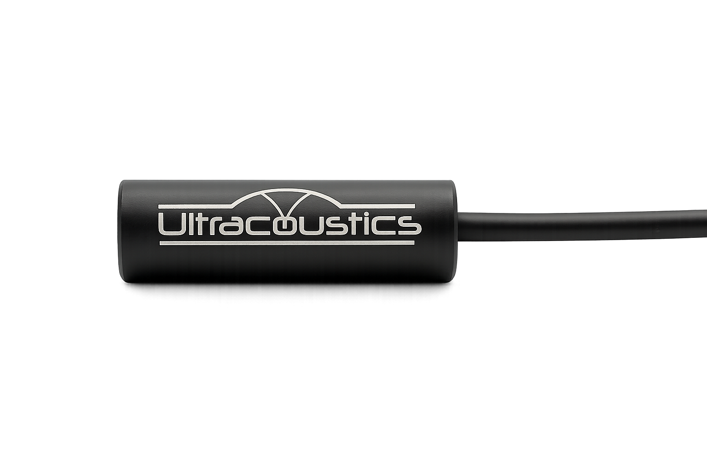
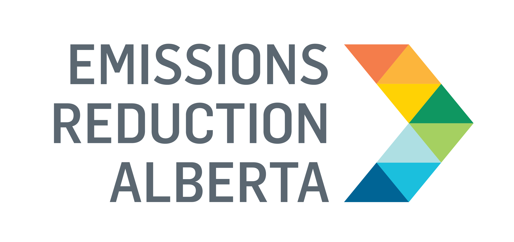

Optical Ultrasonic Sensor
The Widest Bandwidth Ultrasonic Sensor Commercially Available
Non-Contact. Unparalleled Bandwidth. Ultra-Sensitive.
With 5 MHz bandwidth, BROADSONIC captures acoustic information that no other air-coupled sensor can reach.
For Transducer Characterization


Hear the Full Picture
With up to 5 MHz bandwidth, BROADSONIC captures signals that human ears and standard sensors miss. It delivers real-time data for acoustic analysis, gas leak detection, ultrasonic cleaning monitoring, and partial discharge detection.
Learn About BROADSONIC
Applications
Engineered for Critical Sensing
Leak Detection
Omnidirectional, gas-agnostic detection of micro-scale leaks through broadband ultrasonic sensing, even in high-noise industrial environments.
Learn MoreUltrasonic Cleaning
Real-time, non-contact cavitation monitoring from above the tank. Detect transducer drift, degradation, and process anomalies before they affect part quality.
Learn MorePartial Discharge
Non-contact acoustic detection of partial discharge events. Captures the full PD spectrum up to 5 MHz with complete immunity to electromagnetic interference.
Learn MoreNon-Destructive Testing
Non-contact ultrasonic C-scans, bond inspection, and sub-micron thickness mapping. See defects traditional inspection misses.
Learn MoreAvailable Now
Transducer Characterization Service
Ship us your transducer. Get a full broadband beam profile — 0 to 5 MHz at 0.1 mm resolution — delivered as an interactive report within one week. No couplant, no water tank, no repeat scans.
Why BROADSONIC
How We Compare
| Feature | BROADSONIC | Conventional Ultrasonic Mic | Piezoelectric Contact Sensor |
|---|---|---|---|
| Bandwidth | 5 MHz | 20 Hz – 100 kHz | 20 kHz – 2 MHz |
| Contact Required | No (air-coupled) | No (air-coupled) | Yes (surface mount) |
| EMI Immunity | Complete | Partial | None |
| Sensing Principle | Optical (Fabry-Perot) | Capacitive / MEMS | Piezoelectric |
| Omnidirectional | > ±60° | Varies | N/A |
| Active Sensor Area | 100 μm | ~6 mm | ~10 mm |
At a Glance
Technology Comparison
Peer-Reviewed
Backed by Peer-Reviewed Research
10+ peer-reviewed publications in JASA, Applied Physics Letters, Nature Microsystems & Nanoengineering, Optica, and more.
Ecosystem
Backed by Leading Institutions
